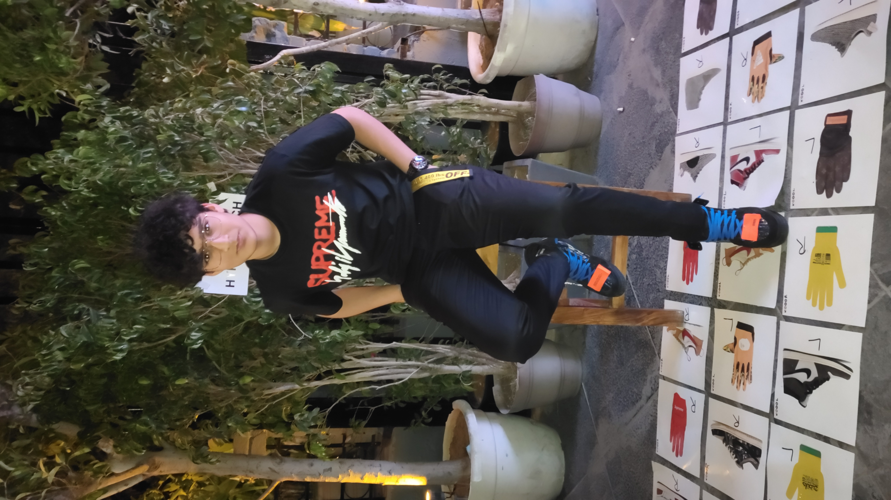
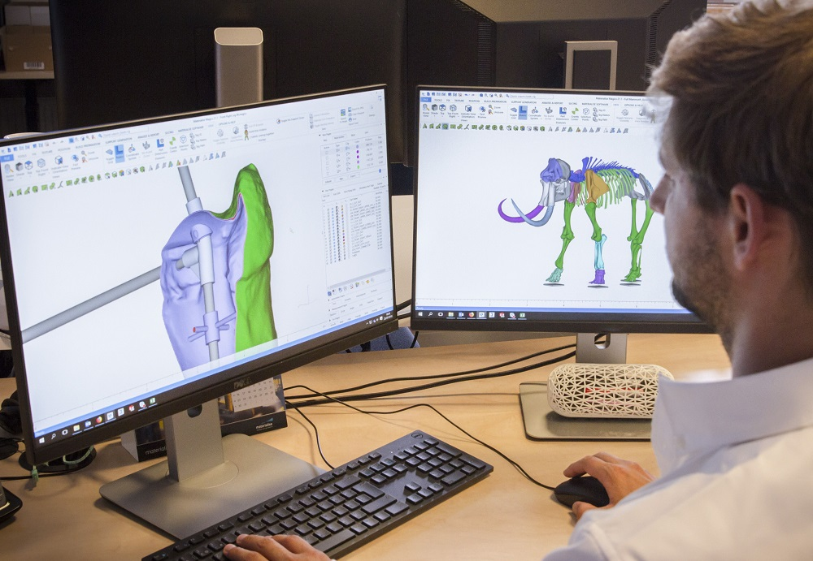
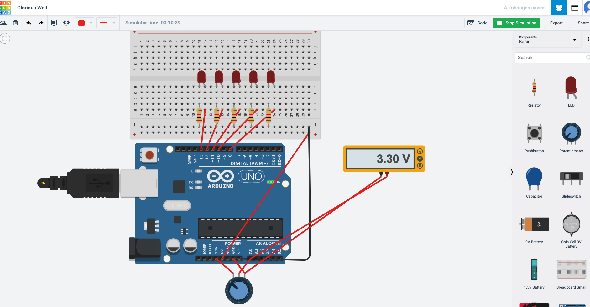
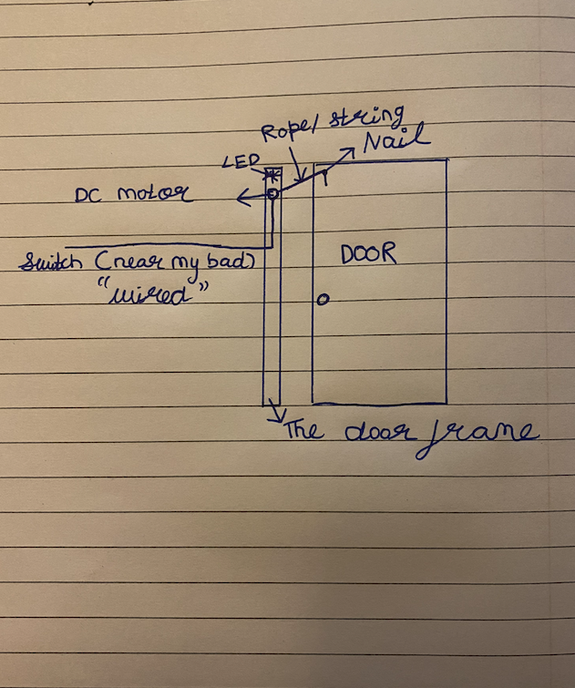

PHYS S-12: Introduction to Digital Fabrication
(Artham Agarwal)

About me:
Final project;

3D Designing:

Circuit:

Final Project Prototype:
Programmable Electronics:
STL and gcode:
Sensors:
Electronic output devices :
IOT and networking devices :